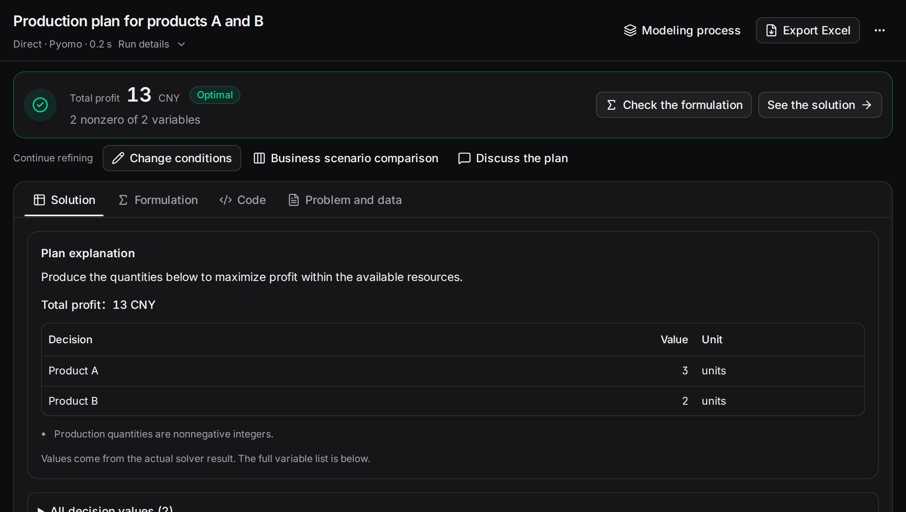

Complete a production task from description through modeling, solving, export and revision. The example includes a statement, downloadable data and localized workbench recordings.
1. Prepare a service and preset#
Open your team service or install one. Choose an available LLM preset; see preset setup to add one.
Send the problem in Optimization chat or use manual modeling. This example uses Direct, Pyomo and AUTO to match the recording.
2. Enter the problem#
Produce nonnegative integer quantities of products A and B.
A earns CNY 3 and uses 2 cutting hours and 1 finishing hour per unit.
B earns CNY 2 and uses 1 cutting hour and 2 finishing hours per unit.
There are 8 hours of each resource.
Calculate the production plan with maximum total profit.
Start modeling and follow formulation, code and solving. For a data-file version, download JSON or CSV, describe fields and capacities, then run.
3. Review and export#
The result is A=3, B=2, total profit CNY 13. Read quantities in Solution and expressions in Formulation/Code. “Export Excel” downloads solution and problem/conditions sheets.

Run information retains method, LLM, actual backend, duration and usage. Open the process for individual stages.
4. Revise and compare#
Request “B at least 3, with other conditions unchanged.” The new result is A=2, B=3, profit 12. Comparison shows changes from the original.
Use Business scenarios to calculate B≥3 and B≥4 together; profits are 12 and 8. See scenario comparison.
5. Follow the recording#
Read the transcript
- Enter a production problem and start modeling.
- Review the computed plan: A = 3, B = 2, total profit 13.
- Enter two scenarios: at least 3 units of B, and at least 4.
- Compare from one baseline: original profit 13; scenario profits 12 and 8.
- Open an attachment and inspect its fields and values.
- Edit A's unit profit and save the attachment to the draft.
Sequence: enter production requirements → inspect profit 13 → enter two scenarios → compare 13, 12 and 8 → open the data editor → edit and save unit profit. Pause, enable captions or use fullscreen.
6. Try it in the docs#
Change capacity, minimum demand or quantity domain, inspect the plan and download CSV. For your own task, use the requirements assistant or Optimization chat.
A earns CNY 3 per unit and B earns CNY 2. Change available hours and minimum orders to compare quantities and total profit.
Maximize 3A + 2B
2A + B ≤ 8；A + 2B ≤ 8；B ≥ 0
A and B are nonnegative integers
Cutting: 8 / 8 hours. Finishing: 7 / 8 hours.
A fixed teaching example, computed instantly in your browser.